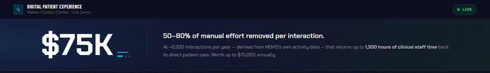
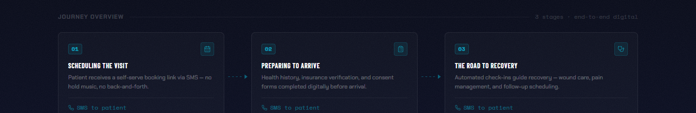
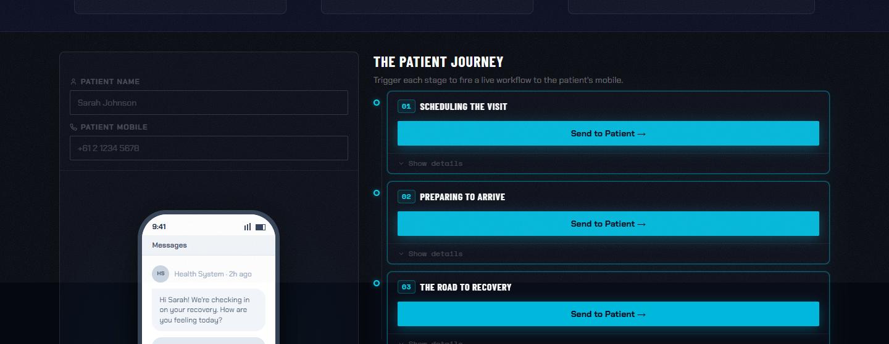

Digital Patient
Experience
A presales demo. A patient scenario. A live Webex CC environment.
A presales demonstration tool for Webex Contact Center, built around a healthcare vertical scenario. Not a product — a sales asset. The audience is healthcare IT buyers and operations leads evaluating whether Webex CC fits their patient engagement workflows.
The scenario: a patient submits a request, triggers an outbound call, and gets routed through a live Webex CC environment. Every routing decision, queue event, and agent state change is visible on a real-time dashboard running alongside the scenario controls.
Selling a contact center platform to healthcare buyers means explaining routing logic, queue management, and AI-to-human handoffs to people who've never operated a contact center. Abstract capabilities don't land in slides.
This demo makes the platform legible in real time. The prospect interacts with the patient journey — submitting forms, watching calls route and queue — while the dashboard shows exactly what Webex CC is doing behind it. The platform demonstrates itself.
Routing decisions visible as they happen. Which queue, which agent, which rule fired.
Real-time agent availability, on-call, wrap-up, and break states across the full team.
Queue depth, wait times, and service level visible across multiple queues simultaneously.
Automation events fire and interact with human agents in real time. The handoff between AI and human is visible.
The scenario resets after each run. A sales engineer can walk the same journey five times in a single meeting without breaking state.
Built directly on the Webex Contact Center platform and APIs. Not simulated — every event on the dashboard is a real platform event.


